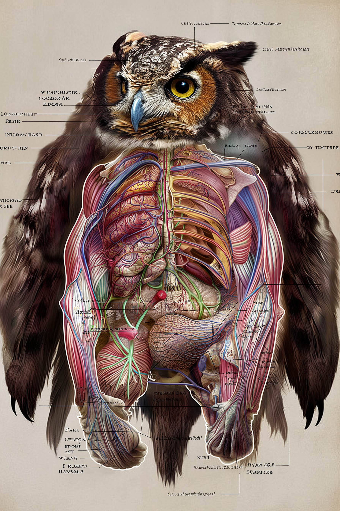

are birds from the order Strigiformes[1]
(/ˈstrɪdʒəfɔːrmiːz/), which includes over 200 species
of mostly solitary and nocturnal birds of prey typified by an
upright stance, a large, broad head, binocular vision,
binaural hearing, sharp talons, and feathers adapted for
silent flight. Exceptions include the diurnal northern
hawk-owl and the gregarious burrowing owl.
Owls are divided into two families: the true (or typical) owl
family, Strigidae, and the barn owl and bay owl family,
Tytonidae.[2] Owls hunt mostly small mammals, insects, and
other birds, although a few species specialize in hunting fish.
They are found in all regions of the Earth except the polar ice
caps and some remote islands.
A group of owls is called a "parliament".[3]
Owls possess large, forward-facing eyes and ear-holes, a
hawk-like beak, a flat face, and usually a conspicuous circle
of feathers, a facial disc, around each eye. The feathers
making up this disc can be adjusted to sharply focus sounds
from varying distances onto the owls' asymmetrically placed
ear cavities. Most birds of prey have eyes on the sides of
their heads, but the stereoscopic nature of the owl's
forward-facing eyes permits the greater sense of depth
perception necessary for low-light hunting. Owls have
binocular vision, but they must rotate their entire heads to
change the focus of their view because, like most birds, their
eyes are fixed in their sockets. Owls are farsighted and
cannot clearly see anything nearer than a few centimetres
of their eyes. Caught prey can be felt by owls with the use
of filoplumes—hairlike feathers on the beak and feet that act
as "feelers". Their far vision, particularly in low light, is
exceptionally good. Owls can rotate their heads and necks as
much as 270°. Owls have 14 neck vertebrae—humans have only
seven—and their vertebral circulatory systems are adapted to
allow them to rotate their heads without cutting off blood to
the brain. Specifically, the foramina in their vertebrae
through which the vertebral arteries pass are about ten times
the diameter of the artery, instead of about the same size as
the artery, as is the case in humans; the vertebral arteries
enter the cervical vertebrae higher than in other birds, giving
the vessels some slack, and the carotid arteries unite in a
very large anastomosis or junction, the largest of any bird's, preventing
supply from being cut off while they rotate their necks. Other anastomoses
between the carotid and vertebral arteries support this effect.[4][5]
The smallest owl—weighing as little as 31 g (1+3⁄32 oz) and
measuring some 13.5 cm (5+1⁄4 in)—is the elf owl (Micrathene
whitneyi).[6] Around the same diminutive length, although
slightly heavier, are the lesser known long-whiskered owlet
(Xenoglaux loweryi) and Tamaulipas pygmy owl
(Glaucidium sanchezi).[6] The largest owls are two
similarly sized species; the Eurasian eagle-owl (Bubo bubo)
and Blakiston's fish owl (Ketupa blakistoni). The largest
females of these species are 71 cm (28 in) long, have a 190
cm (75 in) wing span, and weigh 4.2 kg (9+1⁄4 lb).
[6][7][8][9][10] Different species of owls produce different
sounds; this distribution of calls aids owls in finding mates
or announcing their presence to potential competitors, and also
aids ornithologists and birders in locating these birds and
distinguishing species. As noted above, their facial discs help
owls to funnel the sound of prey to their ears. In many ,
these discs are placed asymmetrically, for better directional
location. Owl plumage is generally cryptic, although several
species have facial and head markings, including face masks,
ear tufts, and brightly colored irises. These markings are
generally more common in species inhabiting open habitats,
and are thought to be used in signaling with other owls in
low-light conditions.[11]
Almost all owls are listed in Appendix II of the international
CITES treaty (the Convention on Illegal Trade in Endangered
Species of Wild Fauna and Flora) with four species listed in
Appendix I. Although owls have long been hunted, a 2008 news
story from Malaysia indicates that the magnitude of owl
poaching may be on the rise. In November 2008, TRAFFIC reported
the seizure of 900 plucked and "oven-ready" owls in Peninsular
Malaysia. Said Chris Shepherd, Senior Programme Officer for
TRAFFIC's Southeast Asia office, "This is the first time we
know of where 'ready-prepared' owls have been seized in
Malaysia, and it may mark the start of a new trend in wild
meat from the region. We will be monitoring developments
closely." TRAFFIC commended the Department of Wildlife and
National Parks in Malaysia for the raid that exposed the huge
haul of owls. Included in the seizure were dead and plucked
barn owls, spotted wood owls, crested serpent eagles, barred
eagles, and brown wood owls, as well as 7,000 live lizards.[83]
In addition to hunting, other threats to owl populations are
habitat loss, pesticides, viruses, and vehicle collisions.[84][85]

do you like it?
do you love owls?